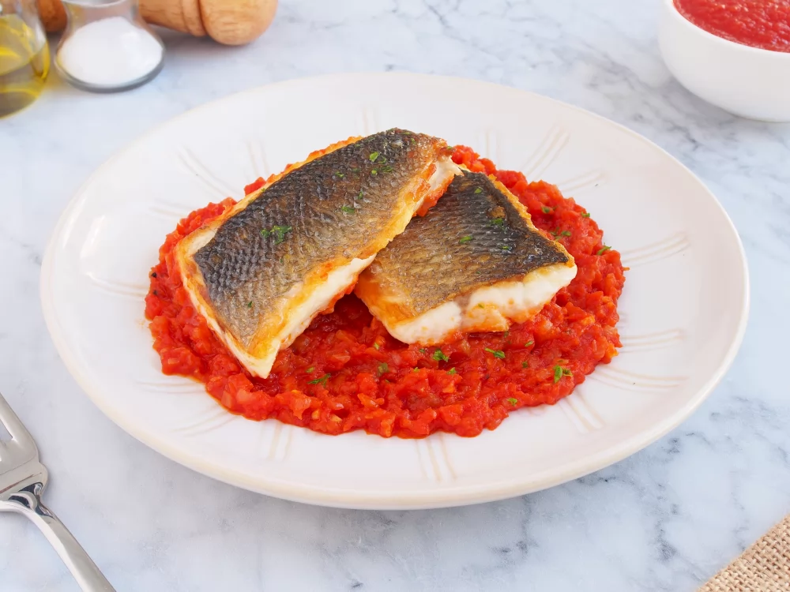

Lubina con tomate

Preparación
- Preparar la lubina, sacar los filetes, limpiar y filetear el pescado. Una vez que tengamos los filetes listos, cortar cada filete por la mitad.
- Picar muy finito 2 dientes de ajo y 150 g de cebolla.
- Poner una cazuela a fuego medio con 25 g aceite de oliva. Cuando el aceite esté caliente, incorporar el ajo picado, sofreir medio minuto y añadir la cebolla y una pizca de sal. Sofreír la cebolla unos 5 minutos hasta que esté transparente.
- Incorporar 400 g de tomate triturado, otra pizca de sal y pimienta negra molida. Mezclar bien y dejar cocinar a fuego medio-bajo durante 15 minutos.
- Cuando a la salsa de tomate le falten 5 minutos para terminar de cocinarse, marcar en una plancha o sartén antiadherente los filetes de lubina. Para ello, poner la sartén a fuego fuerte con unos 5 g de aceite de oliva y cuando la sartén esté bien caliente, poner la lubina con la piel hacia abajo y añadir sal. Dejar que se cocine la lubina a fuego fuerte durante 4 minutos.
- Pasados los 4 minutos, sacar la lubina de la sartén y la colocarla en la cazuela con la salsa de tomate con la piel hacia arriba. Dejar cocinar el conjunto 2 minutos más. Pasado este tiempo, ya estaría lista la lubina con tomate.
- Para servir, picar finito una ramita de perejil fresco y servimos la lubina con tomate espolvoreada con el perejil picado por encima.
| Ingrediente |
Gramos |
| Lubina |
1000 |
| Ajo |
2 dientes |
| Cebolla |
150 |
| Aceite |
50 |
| Sal |
7 |
| Tomate triturado natural |
400 |
| Pimienta negra molida |
3 |